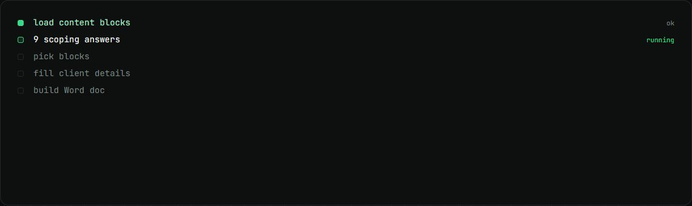
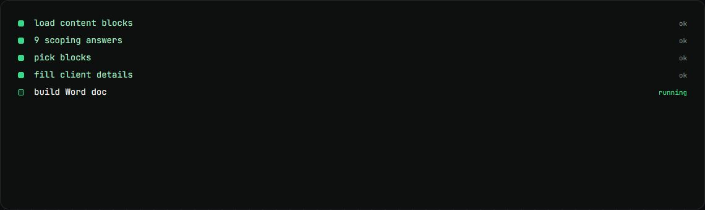

Soch Curriculum Studio
Builds a tailored AI training curriculum as a Word doc from a scoping call, with zero model calls.
my role Built it: 9 of 13 commits.
The problem
Every training client needs a curriculum fitted to their roles and tools, and it has to be checked and consistent, not improvised by a model each time.
How it works
- Source documents are turned into typed, validated content blocks.
- Nine answers from the scoping call pick the right blocks for the client's personas.
- Client details are filled in and a Word document is built locally.
- It downloads, or goes straight into the client's Drive folder.
What changed
- 0model calls per document
- 41authored content blocks
- 9scoping questions
- 5learner personas
What I built
- The block pipeline and its validator.
- 41 authored blocks, about 53,000 words of training content.
- The Word builder and the Drive upload.
Stack
- Next.js
- TypeScript
- docx
- Google Drive API
- Python
- Railway
Stills

